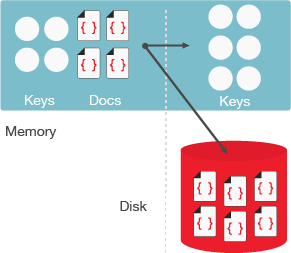

Tunable memory
Tunable memory enables both value-only ejection and full metadata ejection from memory.
The cache management approach for item ejection is implemented with value-only ejection and full metadata ejection:
- Value-only ejection (the default) removes the data from cache but keeps all keys and metadata fields for non-resident items. When the value bucket ejection occurs, the item's value is reset.
- Full metadata ejection removes all data including keys, metadata, and key-values from cache
for non-resident items and reduces RAM requirement for large buckets.Important: When using full ejection, there will be a higher usage of the disk. For example, when the request get_miss (requesting a key that doesn't exist) is received, Couchbase Server will check for the key on the disk even if the bucket is 100% resident.
Full-bucket ejection supports very large data footprints (a large number of data sets or items/keys) since the working sets in memory are smaller. The smaller working sets allow efficient cache management and reduced warmup times. Metadata ejection is configured at the bucket-level.
For example, you might want to enable the full metadata ejection on that bucket if you need to store huge amounts of data (for example, terabytes or petabytes).
For information on how to eject metadata from memory, see the Couchbase web console, CLI, and REST API sections.
Backward compatibility
With full metadata ejection, an item’s key and metadata is ejected along with its value. In previous releases, an item’s value is only ejected from cache while its key and metadata remain in cache.